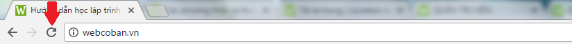

Đối tượng Location trong JavaScript
1) Các thành phần cơ bản của một URL
- Ví dụ, nếu chúng ta có một URL như sau:
- Thì URL đó sẽ có 5 thành phần cơ bản là:
| Thành phần | Giá trị | Mô tả (nếu có) |
|---|---|---|
| Giao thức | http: | |
| Tên máy chủ | webcoban.vn | |
| Tên đường dẫn | /javascript/thong-tin-tai-khoan.html | |
| Chuỗi truy vấn | ?user=nguyenthanhnhan&year=1993 | Chuỗi truy vấn được xác định từ vị trí dấu chấm hỏi (?) đến trước dấu thăng (#) |
| Chỗ neo (anchor) | #part5 | Chỗ neo được xác định từ vị trí dấu thăng (#) đến hết URL |
2) Đối tượng Location
- Đối tượng location chứa các thông tin về URL hiện tại (URL của trang web mà bạn đang truy cập)
- Với việc truy cập vào các thuộc tính của đối tượng location, ta sẽ lấy được những thông tin của URL hiện tại như: giao thức, tên máy chủ, tên dường dẫn, chuỗi truy vấn, chỗ neo,....
- Dưới đây là danh sách các thuộc tính thường được sử dụng nhất của đối tượng location:
| Thuộc tính | Mô tả |
|---|---|
| href | Trả về URL hiện tại |
| protocol | Trả về giao thức của URL hiện tại |
| hostname | Trả về tên máy chủ của URL hiện tại |
| pathname | Trả về tên đường dẫn của URL hiện tại |
| search | Trả về chuỗi truy vấn của URL hiện tại |
| hash | Trả về chỗ neo (anchor) của URL hiện tại |
- Ngoài ra, đối tượng location còn cung cấp một số phương thức như:
| Phương thức | Mô tả |
|---|---|
| reload() | Tải lại trang hiện tại |
| replace() | Điều hướng trang hiện tại sang một trang khác |
| assign() | Điều hướng trang hiện tại sang một trang khác |
2.1) Lấy URL hiện tại
- Để lấy URL hiện tại, ta truy cập vào thuộc tính href của đối tượng location.
<script>
var x = location.href;
</script>
Đối với trang web mà bạn đang truy cập, biến x sẽ có giá trị là:
2.2) Lấy giao thức của URL hiện tại
- Để lấy giao thức của URL hiện tại, ta truy cập vào thuộc tính protocol của đối tượng location.
<script>
var x = location.protocol;
</script>
Đối với trang web mà bạn đang truy cập, biến x sẽ có giá trị là:
2.3) Lấy tên máy chủ của URL hiện tại
- Để lấy tên máy chủ của URL hiện tại, ta truy cập vào thuộc tính hostname của đối tượng location.
<script>
var x = location.hostname;
</script>
Đối với trang web mà bạn đang truy cập, biến x sẽ có giá trị là:
2.4) Lấy tên đường dẫn của URL hiện tại
- Để lấy tên đường dẫn của URL hiện tại, ta truy cập vào thuộc tính pathname của đối tượng location.
<script>
var x = location.pathname;
</script>
Đối với trang web mà bạn đang truy cập, biến x sẽ có giá trị là:
2.5) Lấy chuỗi truy vấn của URL hiện tại
- Để lấy chuỗi truy vấn của URL hiện tại, ta truy cập vào thuộc tính search của đối tượng location.
Bạn sẽ được tìm hiểu rõ thế nào là chuỗi truy vấn trong loạt bài hướng dẫn học PHP
2.6) Lấy chỗ treo của URL hiện tại
- Để lấy chỗ neo (anchor) của URL hiện tại, ta truy cập vào thuộc tính hash của đối tượng location.
2.7) Tải lại trang hiện tại
- Để tải lại trang hiện tại, ta truy cập vào phương thức reload() của đối tượng location.
- Phương thức reload() có ý nghĩa giống như khi ta bấm vào nút "Tải lại trang này" trên trình duyệt.

<!DOCTYPE html>
<html>
<body>
<button type="button" onclick="tai_lai_trang()">Tải lại trang</button>
<script>
function tai_lai_trang(){
location.reload();
}
</script>
</body>
</html>
Trình duyệt hiển thị:
2.8) Điều hướng trang hiện tại sang một trang khác
- Để điều hướng trang hiện tại sang một trang khác, ta có thể truy cập vào một trong hai phương thức replace() hoặc assign() của đối tượng location theo cú pháp như sau:
hoặc
<!DOCTYPE html>
<html>
<body>
<button type="button" onclick="dieu_huong()">Điều hướng sang trang khác</button>
<script>
function dieu_huong(){
location.assign("http://webcoban.vn");
}
</script>
</body>
</html>
Trình duyệt hiển thị:
3) Gợi ý
- Các bạn có thể tham khảo thêm cách sử dụng các phương thức và thuộc tính của đối tượng Location một cách đầy đủ và chi tiết nhất Tại đây